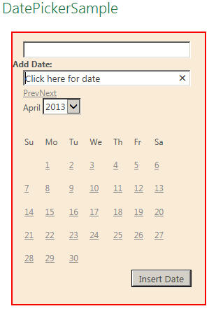
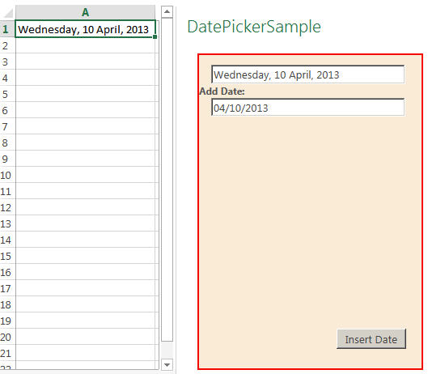

This code sample demonstrates a task pane app that is displayed in Excel 2013 when the app is first started. The task pane contains a text box that, when clicked, displays a calendar. The calendar has various options such as scrolling through the months and selecting different years to display. Choosing on a date in the calendar inserts the date in two different formats into the two text boxes. Choosing the Insert date button inserts the formatted date from one of the text boxes into the worksheet.
Figure 1 shows the workbook with the date-picker calendar displayed.

Figure 2 shows the formatted date after it is inserted into the worksheet.

The sample demonstrates how to perform the following tasks:
-
Attach an event to a HTML element.
-
Customize the datepicker method included as part of the jquery-ui.js JavaScript library by specifying various options.
-
Dynamically add style settings to HTML elements by using JavaScript.
Prerequisites
This sample requires:
-
Visual Studio 2012.
-
Office Developer Tools for Visual Studio 2012.
-
Excel 2013.
Key components of the sample
The sample app contains the following components:
-
The DatePickerSample project, which contains the DatePickerSample.xml manifest file. The XML manifest file of an app for Office enables you to declaratively describe how the app should be activated when you install and use it with Office documents and applications.
-
The DatePickerSampleWeb project, which contains multiple template files. However, the three files that have been developed as part of this sample solution include:
-
DatePickerSample.html (in the Pages folder). This file contains the HTML user interface that is displayed in the task pane when the app is started. The markup consists of a <div> element that contains two text boxes and a button. One of the text boxes, which has the ID datepicker, is where you place the cursor to trigger the display of the calendar. After you select a date in the calendar, another text box, which has the ID alternate, displays a formatted date. Clicking the Insert Date button (ID of setDateBtn) inserts the formatted date at the current location in the worksheet.
-
App.css (in the Styles folder). This cascading style sheet (CSS) contains the code that specifies the position of the text boxes as shown in the following code.
input[type = 'text'] { margin-left: 15px; }The file also contains the style code for the bordered box that contains all of the controls.
#container { border: 2px solid red; height: 375px; width: 275px; background-color: antiquewhite; }The following style code specifies the position of the button.
button { position:relative; top: 250px; left: 170px; }Finally, the alternate text box is initially hidden.
#alternate { visibility:hidden; } -
DatePickerSample.js (in the Scripts folder). This script file contains code that runs when the task pane app is loaded. Specifically, the script consists of commands from the JavaScript JQuery library. This startup script first sets options for the datepicker method. These include the following:
-
Specifying the number of months to display at one time. This sample displays just a single month.
-
Adding a user interface that enables you to change the year displayed as well as how many years to choose from. In this sample, two years before and two years after the current year are displayed in a drop-down list.
-
A user interface is set up to allow a different date format to be used instead of the default format. The alternate date format is displayed in the text box with the ID of alternate in a format where the day of the week is shown followed by the day, month, and then the four-digit year.
JavaScript var options = { numberOfMonths: 1, changeYear: true, yearRange: "-2:+2", altField: "#alternate", altFormat: "DD, d MM, yy" }When you click the datepicker text box, the script calls the datepicker method, passing in the options defined previously. This action displays the calendar. Clicking the text box also executes its click event, which runs an anonymous function that changes the visibility attribute of the alternate text box so that the alternate text box is displayed.
JavaScript $("#datepicker").datepicker(options).click(function () { $('#alternate').css('visibility', 'visible'); });Next, when the Insert date button is clicked, its click event is triggered. This executes an anonymous function that calls the setData function.
JavaScript $('#setDateBtn').click(function () { setData('#alternate'); });The setData function inserts the formatted date that is contained in the alternate text box into the worksheet at the current active location.
JavaScript function setData(elementId) { Office.context.document.setSelectedDataAsync($(elementId).val()); } -
-
All other files are automatically provided by the Visual Studio project template for apps for Office, and they have not been modified in the development of this sample app.
Configure the sample
To configure the sample, open the DatePickerSample.sln file with Visual Studio 2012. No other configuration is necessary.
Build the sample
To build the sample, choose Ctrl+Shift+B, or on the Build menu, choose Build Solution.
Run and test the sample
To run the sample, choose the F5 key. After the task pane is displayed in Excel 2013, click the text box. The calendar is displayed. Notice that you can change the year by selecting an item in the drop-down list. There are also controls that enable you to move between months. Notice after clicking into the one text box that another text box is displayed. Selecting a date in the calendar inserts a different formatted date into each text box. Clicking the Insert date button inserts the formatted date from the top text box into the worksheet.
Troubleshooting
If the app fails to install, ensure that the XML in your DatePickerSample.xml manifest file parses correctly. Also look for any errors in the JavaScript code that could keep the calendar from being displayed. For example, you may have forgotten to end a statement with a semicolon, or you may have misspelled a method name or keyword. If the text boxes in the task pane do not look as you think they should, or if the calendar is not displayed after you click the text box, check the CSS styles. Ensure that you didn't forget a colon between the style and its value, or leave off a semicolon at the end of a style statement.
Change log
First release: April 29, 2013.